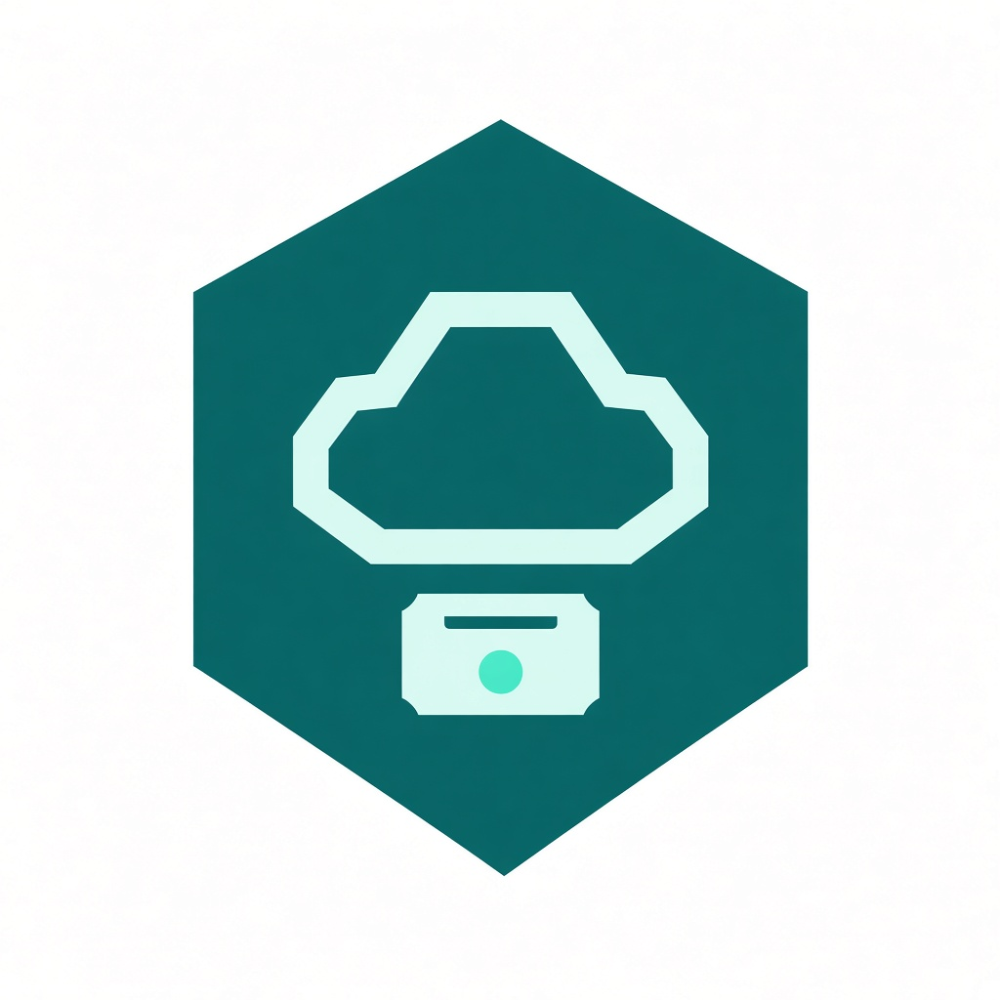

Problema y propuestaUn canal en vez de tres
Canal único de soporte
Una solicitud. Un estado.
Soporte tecnológico centralizado

MESATECH CLOUDEl recorrido
El problema
El operador no ve la cola. El cliente vuelve a llamar. No hay un estado único de la solicitud.
Correo, teléfono y chat. El mismo incidente vive en tres hilos.
El operador no sabe cuántas solicitudes hay abiertas ni en qué etapa.
Vuelve a preguntar: «¿en qué quedó mi solicitud?»
La propuesta
Cliente, operador y administrador. Categoría INCIDENTE, CONSULTA o SUGERENCIA. Prioridad BAJA, MEDIA o URGENTE.
CREADA → ASIGNADA → EN_PROCESO → RESUELTA → CERRADA. También CANCELADA.
React no habla con EC2. El Access Token entra por el HTTP API.
Despliegue EV1 · us-east-1
AWS · us-east-1 · 3 EC2
HTTP API · JWT Authorizer (iss + aud) · CORS localhost:3000
Microsoft Entra ID
La SPA pide un Access Token. api-cloud-native es el audience y publica Cliente, Operador y Administrador.
Resource Server
AWS API Gateway
Rutas e integración
Authorizer y CORS
Despliegue
El BFF no tiene base de datos. Orquesta :8081 y :8082. La base no es pública.
Resource Server · sin JPA
solicitudes y catálogo
5432 solo desde el SG de los MS
Persistencia
Seguridad de red
Aplicación
Un mismo Entra ID. Cliente, operador y administrador ven pantallas distintas.
Autorización
Pruebas mínimas
Desarrollo Cloud Native · DSY1107
Evaluación parcial n.° 1
Preguntas